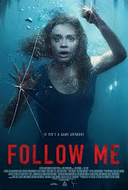
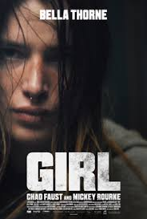

Всемирно известный видеоблогер приезжает в Москву, где ему предлагают пройти эксклюзивный квест. Вместе с небольшой командой он попадает в ловушку, полную чудовищных испытаний, к которым нельзя подготовиться. Молодежный хоррор-триллер с неожиданными поворотами от режиссера и сценариста фильма ужасов «Клаустрофобия» Уилла Верника.Вот уже десять лет Кайл ведет популярный интернет-канал, выкладывая видео со своими экстремальными похождениями.

История о том, как тяжело в деревне без топора. Девушка возвращается в родную глухомань, чтобы прикончить папашу, который испортил ей не только детство, но взрослую жизнь. Но по прибытии выясняется, что его уже кто-то убил. Пытаясь разобраться в случившемся, девушка вступает в противостояние с местными.
Парочка решает заработать денег грабежами, но им кажется, что этого мало, и они начинают выкладывать свои «подвиги» в социальных сетях, получая дополнительную известность и славу. Но такая беззаботная жизнь не может длиться долго.
Всемирно известный видеоблогер приезжает в Москву, где ему предлагают пройти эксклюзивный квест. Вместе с небольшой командой он попадает в ловушку, полную чудовищных испытаний, к которым нельзя подготовиться. Молодежный хоррор-триллер с неожиданными поворотами от режиссера и сценариста фильма ужасов «Клаустрофобия» Уилла Верника.Вот уже десять лет Кайл ведет популярный интернет-канал, выкладывая видео со своими экстремальными похождениями.